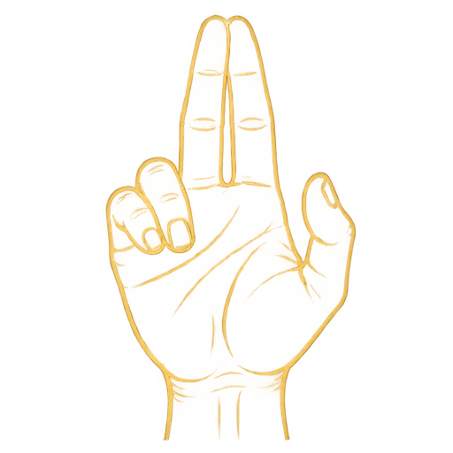
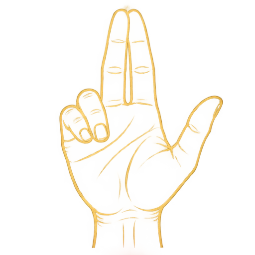
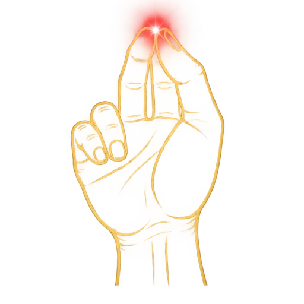
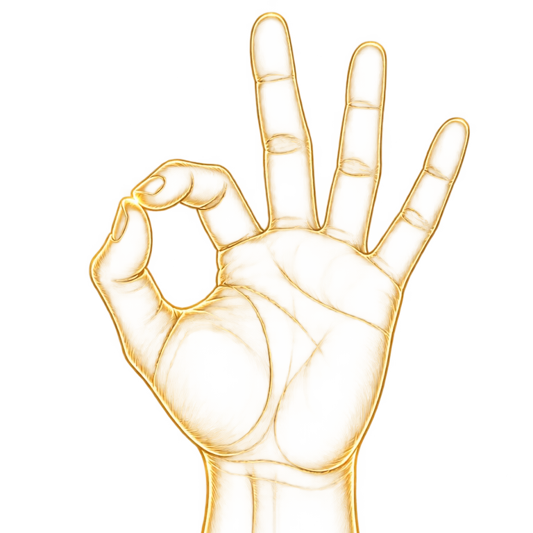
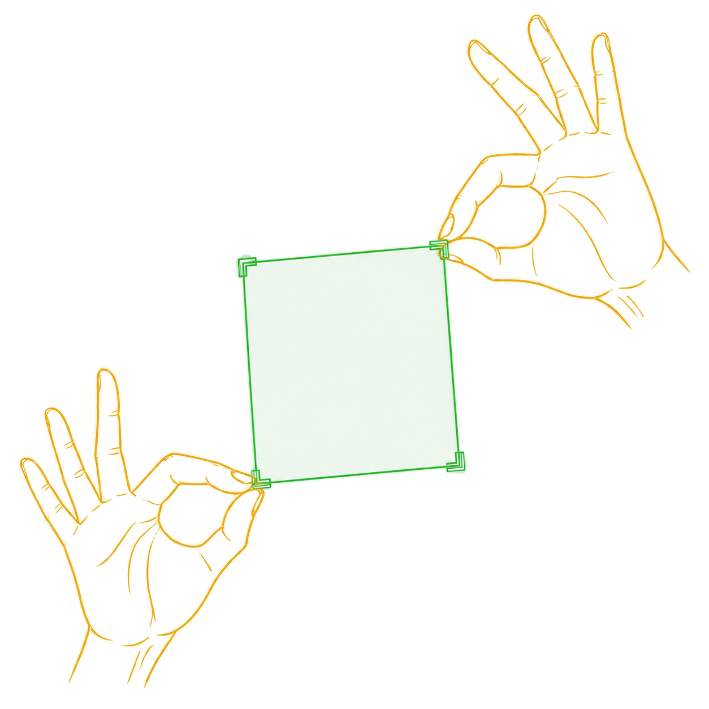
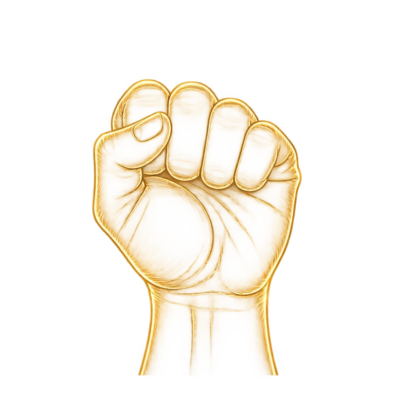

RIGHT HAND右手

Pointerポインター
Join your index and middle fingertips. Move your hand to point.人差し指と中指の先を合わせ、手を動かしてポインターを操作します。
手を動かすだけで、Webはもっと自由になる。
A touchless interaction library for JavaScript & React.JavaScript・Reactのための非接触インタラクションライブラリ。Move your mouse to stir the field. Enable hand tracking to take control.
Try it. Then build with it.試して、そのままあなたのアプリへ。
Enable your camera. Point at the button, bring your thumb to your fingertips, hold briefly, then release your thumb to click. A mouse works here too.カメラを開始し、ボタンにポインターを合わせます。親指を指先に合わせて少し保持し、親指を離すとクリック。マウスでも試せます。
Camera starts only when you choose.カメラはボタンを押すまで起動しません。
Your first click is the beginning.最初のクリックから、はじまる。
A little movement. A new way in.手の動きから、新しい体験へ。
A webcam, a browser, and you. Try it here, then bring the same gestures to your own interface.必要なのはWebカメラとブラウザだけ。ここで試した操作を、そのままあなたのインターフェースへ。
Press Start above and allow camera access. Face a light source and keep your whole hand in the camera preview.上の「開始」を押し、カメラを許可します。明るい場所で、プレビューに手全体が映るようにしてください。
Join your right index and middle fingertips to move the pointer. Bring in your thumb, hold briefly, then release to click; keep holding to drag.右手の人差し指と中指を合わせて移動。親指も合わせて少し保持し、離すとクリック。保持したまま動かすとドラッグできます。
Explore the gesture guide and live demo below. Press Stop whenever you are done to release the camera.下のジェスチャーガイドとデモで、スクロールや範囲選択も体験できます。終了時は「停止」でカメラをオフに。
Camera access needs HTTPS or localhost. The model downloads on first use; video is processed on your device.カメラにはHTTPSまたはlocalhostが必要です。初回はモデルをダウンロードし、映像は端末内で処理します。
Gestures

Join your index and middle fingertips. Move your hand to point.人差し指と中指の先を合わせ、手を動かしてポインターを操作します。


From Pointer, bring in your thumb, hold briefly, then release it to click. Keep the three fingertips together to drag.親指を合わせて少し保持し、離すとクリック。3本を合わせたまま動かすとドラッグします。

Pinch thumb and index only, keeping the other fingers apart. Move to scroll the page.他の指を離したまま親指と人差し指だけをつまみ、手を動かしてスクロールします。


Meet both pinches at one point, then spread to opposite corners. Open both hands to freeze the selection, then pinch once with each hand to capture it. Wait without confirming to cancel.両手のつまみを一点で合わせ、対角方向へ広げます。両手を開いて範囲を固定し、左右それぞれでもう一度つまむと撮影します。確定せず待つと解除されます。

RIGHT CLICK右クリックHold your left hand in a fist, then click with your right hand. The click becomes a right click.左手を握ったまま右手でクリックすると、右クリックとして送出されます。
Product-ready demo
These panels listen the way ordinary application code listens — not the way a demo would be written to flatter a gesture library. Start the camera above and work through them. Your mouse drives them too, so you can compare.
Not a button, not a link. Just <div onClick> — the case a tag whitelist can never reach.
Driven by pointerenter and pointerleave, the events tooltips and menus rely on.
Make a fist with your off hand, then click. Fires a real contextmenu.
Pinch and hold, then move. A pointerdown → pointermove → pointerup sequence.
Grab inside the panel and the panel scrolls, not the page.
Pinch with both hands to frame an area, open them, then tap once with each hand. Wait without confirming to cancel. The crop lands here, and the result is reported next to your hands.
Install
The component renders a start button and handles the consent step and camera preview. Once a visitor grants access, the rest of your page becomes operable by hand — you change nothing else.
// React
import AirCursor from 'air-cursor';
export default function App() {
return <AirCursor />;
}
The engine has no React dependency, so plain JavaScript, Vue and Svelte are all
first-class. The individual pieces — VirtualPointer,
GrabScroller, TwoHandRecognizer,
OneEuroFilter — are exported too, if you want your own mapping.
// anything else
import { AirCursorEngine } from 'air-cursor';
const engine = new AirCursorEngine({
video: document.querySelector('video'),
// The same lightweight settings as this demo
inferenceFps: 24,
hands: { modelComplexity: 0 },
camera: { width: 480, height: 360 },
onState: (s) => console.log(s?.mode),
});
await engine.start();Built for your web stack
Most webcam gesture libraries find an element with elementFromPoint and
dispatch a single click. That covers buttons and links and nothing else.
AirCursor synthesizes what a real pointing device produces, so behaviour that depends
on the sequence works — including in Radix, MUI and every pointer-based drag
library, which listen on pointerdown rather than click.
| Interaction | Events emitted |
|---|---|
| Hover | pointerout → pointerleave → pointerover → pointerenter |
| Move | pointermove, mousemove |
| Click | pointerdown → mousedown → pointerup → mouseup → click |
| Right click | pointerdown{button:2} → pointerup → contextmenu |
| Drag | pointerdown → pointermove… → pointerup, captured to the press target |
Pointer position runs through a One Euro filter, which smooths hard when the hand is still and barely at all when it moves fast. Gesture booleans use separate enter and exit thresholds plus a hold window, so a hand resting on a threshold cannot chatter and poses passing through on the way somewhere else do not fire.
Every threshold is measured in hand units — wrist to middle-finger knuckle — so a gesture reads the same close to the camera or across the room.
Inference and actuation are separated. MediaPipe runs at whatever rate the CPU
allows and that rate fluctuates; scrolling, cursor movement and physics run on
requestAnimationFrame instead.
The galaxy runs in a rendering worker where supported. While the camera is active, the page lowers rendering cost to leave more room for hand interaction.
Known limits
These are properties of the browser platform, not gaps waiting to be filled. They are listed here rather than discovered later.
isTrusted: false, so anything gated behind a real gesture stays out of reach: clipboard reads, requestFullscreen(), window.open(). Clipboard writes generally succeed in Chrome, but not in Firefox or Safari.:hover does not respond. Hover styling comes from the browser's own hit testing. JavaScript hover handlers fire correctly; :hover rules do not. AirCursor adds an aircursor-hover class to the element under the cursor, so style that alongside it.draggable="true" only responds to trusted input. Pointer-event based drag libraries work normally.mediapipeBasePath at a self-hosted copy for offline or kiosk installations.FAQ
Run npm install air-cursor, import AirCursor, and render <AirCursor />. Visitors start the camera themselves. Your existing click and pointer handlers receive the gesture events.npm install air-cursor で導入し、AirCursorをimportして <AirCursor /> を配置します。利用者がカメラを開始すると、既存のクリック・ポインターハンドラへイベントが届きます。
Yes. Import AirCursorEngine from the same package and pass a video element. The engine works without a React UI. This demo uses that public engine API; the code above shows the setup.同じパッケージから AirCursorEngine をimportし、video要素を渡します。エンジンはReactのUIなしでも利用でき、このデモも同じ公開APIを使っています。設定例は上の導入コードをご覧ください。
Hand tracking runs in the browser. Video and hand landmarks are not uploaded. The first start downloads the MediaPipe model; self-hosting its assets is supported through mediapipeBasePath.手の認識はブラウザ内で行い、映像や手の座標を送信しません。初回起動ではMediaPipeモデルをダウンロードします。mediapipeBasePath でモデルを自分のサーバーから配信することもできます。
Copy the BibTeX entry below for your paper or project. Citation is appreciated and optional. Include the version you used, and link to the repository so others can reproduce your work.下のBibTeXをコピーして論文やプロジェクトにお使いください。引用は任意ですが、していただけると幸いです。再現できるよう、使ったバージョンとリポジトリへのリンクを記載してください。
Citation
AirCursor is MIT licensed, so you are free to use it however you like. If it ends up in a product, a paper or a project you publish, a citation is appreciated.
@software{ishikawa2026aircursor,
author = {Ishikawa, Ritsuki},
title = {{AirCursor}: A Touchless Pointer for the Web},
year = {2026},
version = {2.0.0},
url = {https://github.com/ritsuki-i/AirCursor}
}